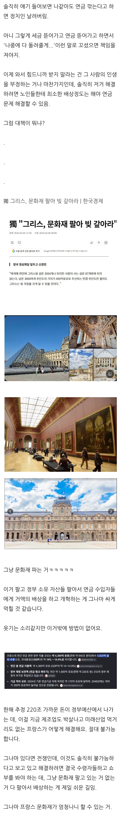

문화재도 태평양 섬도 모두 팔겠다

문화재도 태평양 섬도 모두 팔겠다
이미 원전은 하고 있을거 ㅋㅋㅋ
저거 다 팔아도 반년 연금도 안나올듯
어차피 노략질해서 가져온거니 창조경제자나?
어차피 다 훔쳐 온거라서
장물거래아니냐? ㅋㅋㅋㅋ
요새 트럼프가 영토확장에 환장하던데 기아나나 팔아라
가난한 나라에게 문화재 따윈 사치
100년 임대 이런식으로 팔려할거 같은데
사면 뭐가좋지??
문화재팔아도 연금받는 노친네가 너무많아서 의미없음 연금쳐내야함
출구전략으로 전쟁에 참여하는거 아냐? ㄷㄷ
할아버지들 파병보내버리나
자산에 세금 때리면 된다니까?
그럼 부자들 다 탈출함
이미 그랬다가 부자들 도망간 전적있는 나라인데 또 해?
유럽권은 언어적 문화적 장벽이 낮아서 조지려고 들면 진짜로 도망칠 수 있다는 거
한중일이 같은 언어 썻으면 서로 부자들 유치하느라 상속세는 진작에 폐지됐음 ㅎ
ㅇㅇ 장보러 국경넘는덴디 ㅋㅋ
이미 한번 해서 부자들 바로 옆나라인 모나코로 빤스런 쳤음
프랑스가 부유세 도입 실패의 대표 사례임
선진국들 망조 드는 테크트리가 다 비슷한 듯ㅋㅋ 경제호황->늘어난 세수로 복지확대->불황->빚 내서 복지확대->경제호황 반복하다가 호황이 오랫동안 다시 안 찾아오면 터지는 거ㅋㅋ 인구라도 늘어나는 중이면 장기적으로 경제는 성장하니까 호황기가 돌아올 거란 기대라도 있는데, 인구도 줄고 고령화로 먹일 입만 늘어나는 와중에 새 성장동력도 없으니
문화승리 점수가!!
좋은 생각이 있음
그냥 돈 많은 유대인 다 죽이고 재산 몰수하는거임

저걸로 택도 없음
노인을 줄이면 되지
차에서 내려 주시죠.
코로나시즌2?
복지를 적당히 늘렸어야지
포퓰리즘 남발하다 허리띠 못 조르니 사면초가
코로나 시즌2를 발명해서 연금을 받을 사람을 제거한다
+ 한국한테 핵기술 팔기
몇년전만 해도 복지가 경제를 성장시킨다고 복지 찬양하는 사람들 개드립에도 많았는데 전멸함. 베네수엘라 그리스 뿐 아니라 독일 프랑스도 망할줄은 몰랐지....
근데 프랑스는 다른나라들 제조업 올리고 IT 테크탈때 뭐했냐?
안해도 잘 살았으니까 필요성을 못느끼지 않았을까
직지심체요절이랑 외규장각 의궤 삽니다 ㅅㅅㅅ
알아보니 마크롱이 부자들이랑 기업들 세금을 엄청 깍아줬든만...
그거만 되돌려도 세수 엄청 확보되겠던데.....
세금올리면 부자와 기업들이 외국으로 런함 + 그거 해도 정부지출규모가 워낙커서 흐름은 거스를 수 없음
되돌리면 그냥 내주간? 다른 유럽연합국으로 튄다하면 쌍수들고 환영할듯
루브르 창고 대방출
레볼루숑 일어나면 모든 자산가치가 재평가됨...
역사적으로 나라가 리셋하는 테크트리임.
원자력 발전소, 태양광 발전소 도배때려서 유럽 전역에 전기 보내면 가능함 ㅇㅇ 전기의 장점은 연결만 되면 환금성 좋은걸?